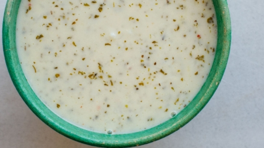

Yayla Çorbasi

Pişen çorbaya naneli yağı, 1 tatlı kaşığı tuzu ve 1 dolu çay kaşığı pul biberi ekleyince dumanı üzerinde yayla çorbanız hazır.
Malzemeler
- 2 su bardağı yoğurt
- 3 tepeleme çorba kaşığı süzme yoğurt
- 2 yumurta sarısı
- 2 çorba kaşığı un
- 2 çorba kaşığı tereyağı
- 1 avuç kuru nane
- 1 dolu çay kaşığı pul biber
- 1 tatlı kaşığı tuz
Hazırlanışı
- 2 su bardağı yoğurdu, 3 çorba kaşığı süzme yoğurdu ve 2 yumurta sarısını çırpın.
Süzme yoğurt sayesinde çorbanın hem kıvamı hem de lezzeti çok daha okkalı oluyor.
- Üzerine 2 çorba kaşığı unu ekleyip topak kalmayana kadar çırpmaya devam edin.
Tencereye önceki günden kalan 2 büyük bardak pilavı ve 7 bardak, 1,8 litre suyu koyun.
Su kaynayınca içinden alıp yoğurda ekleyin ve yoğurdu ılıştırın. Böylece yoğurt tencereye girince kesilmeyecektir.
- Ilınmış yoğurdu tencereye ekleyin.
Kaynayana kadar yüksek ateşte kaynayınca kısık orta ateşte 10-15 dakika pişirin.
- Bu sırada, 2 çorba kaşığı tereyağını kızdırıp üzerine 1 avuç kuru naneyi ekleyin.
Pişen çorbaya naneli yağı, 1 tatlı kaşığı tuzu ve 1 dolu çay kaşığı pul biberi ekleyince dumanı üzerinde yayla çorbanız hazır.